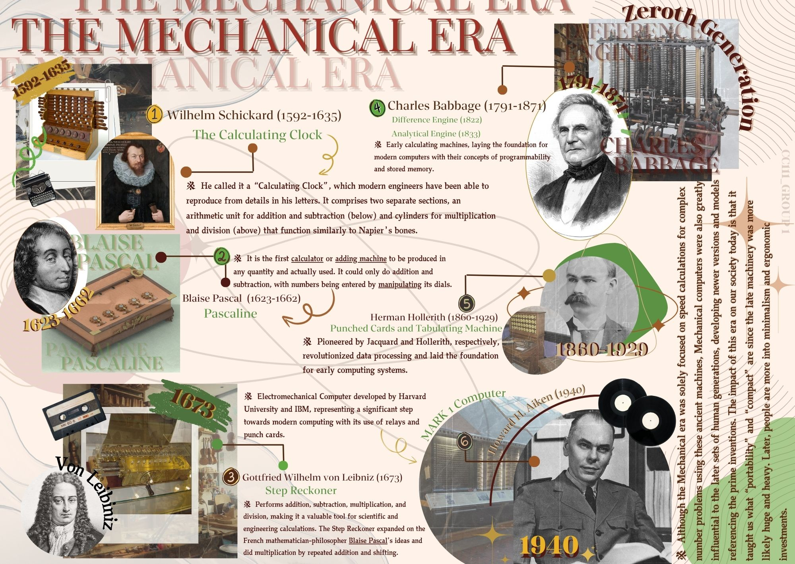

![ In Topic 1 we provided a infographic to summarize the era provided to us, which is the Mechanical Era. The Mechanical Era marked the beginning of significant technological advancements, with the invention of the printing press and mechanical clocks revolutionizing communication and timekeeping. It saw the rise of machines powered by human or animal energy, laying the foundation for modern machinery and early automation that improved production efficiency. This era was crucial in setting the stage for future innovations in engineering and manufacturing.](image1.jpg){kind=link}
{kind=link}
What is my favorite lesson?
My favorite part would be The Internet and World Wide Web. The Internet is like a huge network that connects millions of computers all over the world. It's a system that helps devices send and receive information using certain rules called protocols. It lets us do a lot of things, like send emails, watch videos, play games, and use social media. Without the Internet, we wouldn't be able to access all the websites and services we use every day. The World Wide Web (WWW) The World Wide Web (WWW) is a part of the Internet where we find websites and web pages. It’s what we use to search for information, read articles, watch videos, and interact with content online. The Web uses something called hyperlinks, which are clickable links that take you to other pages, making it easy to navigate and explore different sites. So, the Internet is the connection, and the World Wide Web is the place where we actually find and view all the information.
What lesson challenges me the most?
For me that would be the basic concept of computer security. One of the biggest challenges with data security is understanding how to classify different types of information based on sensitivity. Knowing which information needs stronger protection, such as personal data or financial records, can be difficult when working with various systems and technologies. It’s also hard to ensure that all sensitive data is stored and transmitted securely. When it comes to cybercrimes, it's challenging to keep track of all the different types, such as identity theft, hacking, and phishing. Each type requires different strategies to prevent and detect, and it can be overwhelming to know where to start. Moreover, identifying cybercriminals is difficult because they often hide their identities or use anonymous methods, making them hard to track and apprehend. As for countermeasures, it's tough to stay updated on the best practices to protect against cyberattacks. There are so many different defense mechanisms like firewalls, encryption, and multi-factor authentication, and learning how to implement them effectively across different platforms can be complicated. Also, understanding which countermeasures are most suitable for specific types of cyberattacks can be confusing. It's a continuous learning process to keep up with new threats and defense techniques.